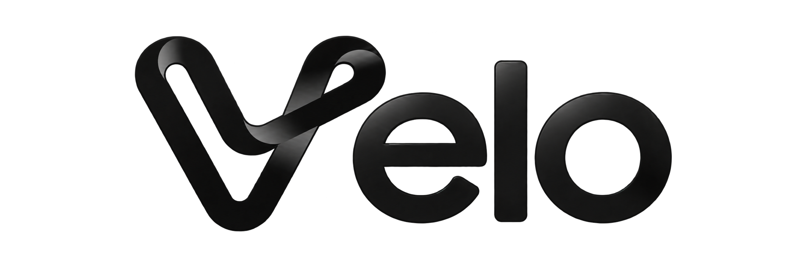

Team BaCayKiem · ITCC 2026
The logo, on the primary color.
Official Velo marks on #FFF9A3 — the primary tint of our system. Every file below is a real PNG with the ribbon in white or ink; grab what you need for slides, decks and dark surfaces.







// RULES
White logo only on ink or the deep yellow — never on paper or cream (it disappears).
Ink logo only on paper, cream or the primary tint.
Never recolor the ribbon to anything but ink or white; never add shadows, gradients or rounded corners.
Clear space: keep at least the height of the ribbon mark on all sides.